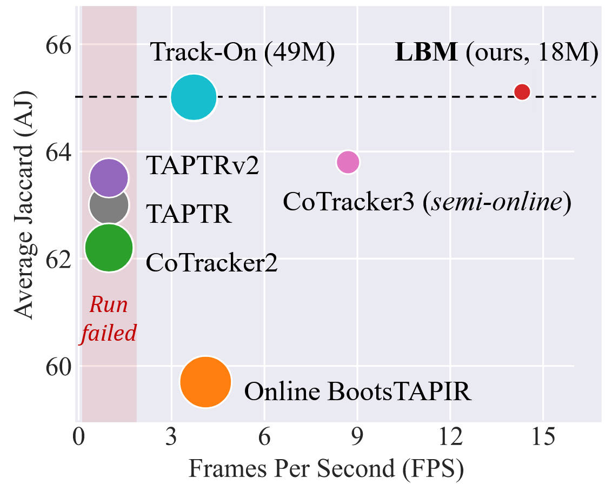

Lattice Boltzmann Model for Learning Real-World Pixel Dynamicity
Arxiv 2025
- 1The University of Hong Kong
- 2Institute of Zoology, Chinese Academy of Sciences
- 3Tongji University


Abstract
This work proposes the Lattice Boltzmann Model (LBM) to learn real-world pixel dynamicity for visual tracking. LBM decomposes visual representations into dynamic pixel lattices and solves pixel motion states through collision-streaming processes. Specifically, the high-dimensional distribution of the target pixels is acquired through a multilayer predict-update network to estimate the pixel positions and visibility. The predict stage formulates lattice collisions among the spatial neighborhood of target pixels and develops lattice streaming within the temporal visual context. The update stage rectifies the pixel distributions with online visual representations. Compared with existing methods, LBM demonstrates practical applicability in an online and real-time manner, which can efficiently adapt to real-world visual tracking tasks. Comprehensive evaluations of real-world point tracking benchmarks such as TAP-Vid and RoboTAP validate LBM's efficiency. A general evaluation of large-scale open-world object tracking benchmarks such as TAO, BFT, and OVT-B further demonstrates LBM's real-world practicality.

Real-world object dynamicity → pixel dynamicity → fluid dynamicity. The object dynamicity in the open world manifests through deformation and self-occlusion, as exemplified by the bird in the figure. From a visual perspective, such object dynamicity can be decomposed into pixel dynamicity. The pixels are subsequently modeled as fluid lattices that simulate hydrodynamic streaming and collision processes, and the pixel motion states are efficiently addressed with the proposed lattice Boltzmann model.
Method
LBM aims to efficiently track arbitrary pixels. Its core principle employs the lattice Boltzmann method from computational fluid dynamics, treating pixels as fluid particles and mimicking their motion to achieve pixel tracking.
Results

Efficiency comparison on TAP-Vid DAVIS benchmark with an NVIDIA Jetson Orin NX super. LBM shows efficiency with higher inference speed and smaller model size. Size of circles corresponds to the number of parameters. With TensorRT, LBM achieves ~49 FPS on Jetson Orin NX. For more details, please refer to our paper.
Video
Citation
@inproceedings{lattice2025zheng,
title={Lattice Boltzmann Model for Learning Real-World Pixel Dynamicity},
author={Guangze Zheng and Shijie Lin and Haobo Zuo and Si Si and Ming-Shan Wang and Changhong Fu and Jia Pan},
booktitle={arXiv preprint arXiv},
year={2025},
pages={1-8},
}
Open Source
The LBM code and model are under Apache License.
Acknowledgements
The website design is inspired by RT-1, whose template was borrowed from Jon Barron.